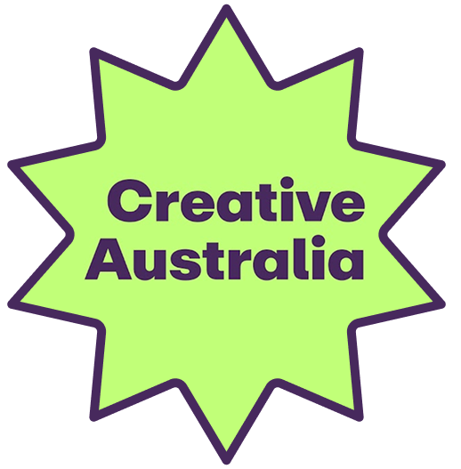

Creative Australia
national grants and funding opportunities
You were told you could choose.
For centuries, the arts and STEM fields have been debated as competing contributions to society. But this comparison can obscure a more fundamental question: who gets equal access to both?
Universities across Australia publicly commit to diverse and equitable academic pathways. Yet the data tells a different story. Across the country, courses are being cut, majors discontinued, and arts programmes quietly scaled back, despite institutional promises to the contrary.
Between 2016 and 2026, courses offered shifted dramatically, not gradually, but divergently. STEM disciplines (science, technology, engineering, and mathematics) expanded, while the arts (literature, music, visual art, design, history, philosophy, and the humanities) contracted. The gap between institutional promise and institutional practice has never been more visible, quantifiable, and striking. What follows reveals the gap between institutional promise and institutional practice.

source. Southern Cross University Strategy
The course closures shown on the map do not happen in isolation. In Australia, they sit within a longer history of policy changes that have gradually reshaped who can afford to pursue higher education. From free university to $15,000 a year for an arts degree, Australia's higher education system has shifted significantly across generations. As study costs and HECS debt continue to rise, they increasingly influence not only where students study, but whether they choose arts at all.
From public investment to market-driven education
Access barriers & class inequality
University education was once a privilege for wealthy families, meaning access was determined by wealth rather than merit that reinforcing social inequality.(Quiggin, 2025)
Post-War Growth in Australian Higher Education
After WWII, the federal government took over university funding to support reconstruction and workforce needs, nearly doubling enrolments and opening access to working-class students. (Norton, 2025)
Gough Whitlam'sAustralia's 21st Prime Minister (1972–75), known for sweeping social reforms including free university education. "It's Time" speech
"We will abolish fees at universities and colleges ... We believe that a student's merit rather than a parent's wealth should decide who should benefit ..."(Museum of Australian Democracy, 1972)
Free university education introduced
The Whitlam Labor Government abolished all tuition fees. Universities were entirely government-funded, allowing first-generation students to attend without financial burden.
The high water mark
Nine years of universal free education saw enrolment double from 2 in 10 to 4 in 10 Australians. For many educators, this remains the pinnacle of educational access and equity. (Williams, 2025)
The Dawkins Reforms
John DawkinsAustralia's Minister for Employment, Education and Training (1987–91), architect of the sweeping 1988 higher education reforms that created the modern university system. introduced HECSHigher Education Contribution Scheme - a deferred student loan system where graduates repay fees through the tax system once earning above a threshold. in 1989, replacing fully government-funded university education with a shared-cost model. Students were charged $1,800 per year, repayable through the tax system after reaching an income threshold.
(Williams, 2025)Three-band systemIntroduced in 1997, the three-band system charged different fees for different degrees based on expected future earnings. Students repaid these costs later through HECS. introduced
Government explicitly acknowledged "arts graduates earn less" and should be protected with lowest fees.(Australia Government Study Assist, 2024)
Fee growth and COVID-19 revenue losses
Farts degree fees had risen to $6,256 as universities became more dependent on international student income. The COVID-19 border closures then exposed this reliance, triggering an estimated $7 billion revenue loss across the sector.
Job Ready GraduatesThe Job Ready Graduates scheme was introduced to encourage students to pursue degrees in fields with strong employment prospects. announced
The Morrison Government cut STEM fees while raising humanities fees by ~113%, moving arts degrees from the lowest to the highest fee band, from $6,256 to $16,992, to steer students toward fields with stronger employment prospects.
Universities respond with cuts
Universities responded to funding changes by cutting programs and discontinuing majors to manage costs and adapt to shifting demand.
How Australian University Fees Were Repriced (1989–2023)
source. Australia Government Department of Education (2026)
Phase 1 (1989–1996): All disciplines cost the same. Education was treated as equally valuable across all fields.
Phase 2 (1997–2020): Fees separated into bands, with arts and education at the lowest and law at the highest. This structure held for 23 years.
Phase 3 (2021+): Arts fees jumped from the lowest to the highest band, a shift driven by the Job Ready Graduates SchemeThe Job Ready Graduates scheme was introduced to encourage students to pursue degrees in fields with strong employment prospects., which increased arts fees by up to 113%.
Even after paying significantly higher tuition, Arts graduates continue to face fewer job opportunities than STEM graduates, highlighting a growing mismatch between what students pay and the employment outcomes available to them.
The evidence that contradicts policy
Number of graduates per year, by discipline
source. Australian Department of Education (2015–2024)
Annual average quarterly vacancies ('000)
source. Australian Bureau of Statistics - Job Vacancies by Industry, Original series (2015–2024)
The contradiction: Arts graduates outnumber STEM graduates nearly 2:1, yet STEM job vacancies peaked at 121,000 compared to just 7,000 in Arts.
The policy claim: Government used this gap to justify making arts the most expensive degree, at $16,992 versus $9,500 for STEM.
The reality: STEM had over 500 open roles per 100 graduates at peak; arts never exceeded 20. The gap was real, but the policy response remains debated.
we risk limiting who has access to arts learning…
- Co-author Dr John Nicholas Saunders (Creative Arts,2017)
The decline in arts enrolments is not uniform but it is a national pattern, playing out differently across every state and territory. Since 2018, the consistent reduction of available creative arts courses has coincided with falling enrolments across universities and the TAFE sector alike (Gattenhof & Saunders, 2026), and the data below shows just how unevenly that weight has been distributed.
By state, decline in university creative arts enrolments
Each icon represents 5% of 2018 enrolments. Darker icons show the share remaining in 2023; lighter icons show the share lost.
source. Australian Government Department of Education - Selected Higher Education Statistics – 2024 Student data, 2024; Gattenhof & Saunders, 2026
What these numbers leave behind is a shrinking pipeline into Australia's cultural future. While the cultural and creative economy contributes more than $111 billion annually (A New Approach, 2020) and supports hundreds of thousands of jobs, fewer students are entering the disciplines that sustain it. As enrolments decline, the consequences extend beyond workforce shortages. Fewer writers, designers, educators, linguists, and cultural workers means fewer people creating the media, preserving the histories, and producing the cultural experiences that Australians engage with every day. The result is a growing disconnect between society's reliance on culture and its investment in the people who make it possible.
So....
If you are still choosing the arts, you are not alone. You are navigating a system that was redesigned to make you doubt yourself. The debt is real. The cuts are real. The feeling that your choice demands a justification no one ever asks of an engineering student is real too. But so is the $111 billion industry built by people who kept going anyway. This website exists because that struggle deserves to be seen and named, not quietly filed away as a risk you knowingly accepted. The arts were never just an economic question. They are how a society knows itself, how it grieves, imagines, and remembers.
If you need support, here is what is available to you:

national grants and funding opportunities
jobs, industry news, and a community of working practitioners
providing policy advice, research funding, and advocacy for Arts disciplines
A country that prices out that capacity does not become more productive.
It becomes less alive.